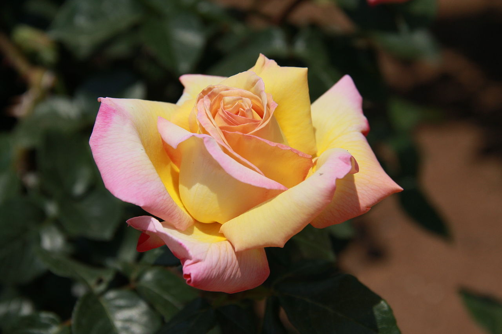

Roses
Redleaf rose
native to the mountains of central and southern Europe, from the Spanish Pyrenees east to
Bulgaria, and north to Germany. With distinctive leaves, and soft pink petals.

Peace Rose
Also known as "Rosa Madame", has large flowers of a light yellow to cream color, slightly
flushed at the petal edges with crimson-pink.
